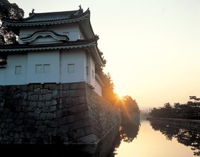

1603年、将軍・徳川家康が造営したもの。1867年、最後の将軍・徳川慶喜が朝廷に政権を返上することを決めた場所でもある。本丸御殿は1788年の大火で焼失し、現在の建物は京都御所にあった御殿を移築したもの。国宝でもある二の丸御殿では、狩野一門の襖絵をはじめ桃山美術の数々が見られる。日本人にとっても歴史の深みを味わえる場所だ。戻り
David Felipe Rico HernandezUniversidad Nacional de Colombia